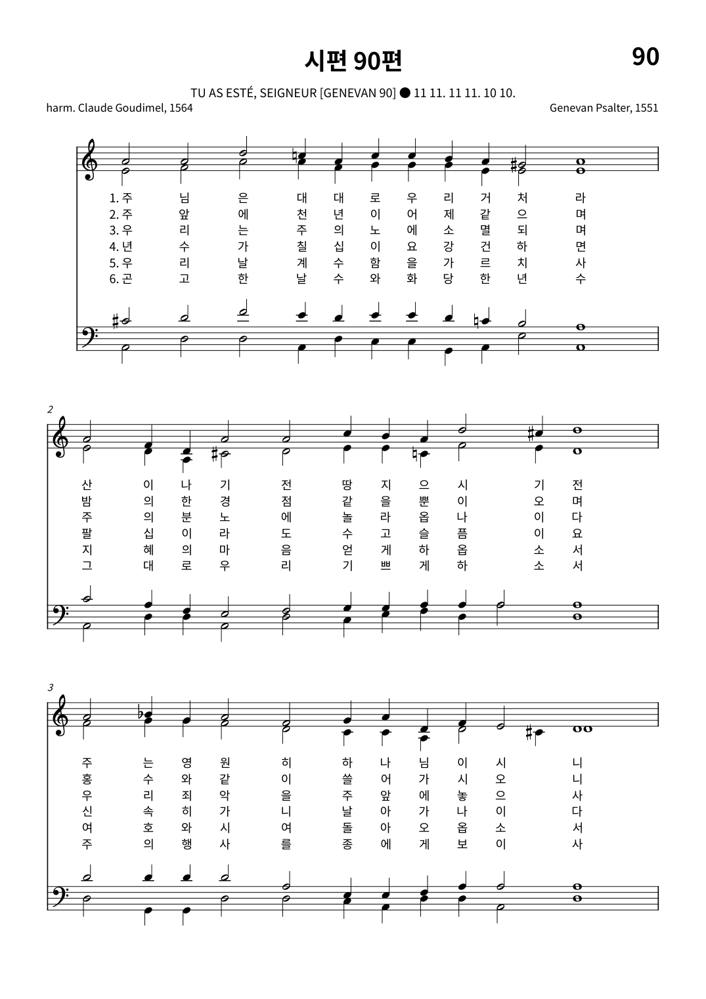

시편 90편
TU AS ESTÉ, SEIGNEUR [GENEVAN 90] · 11 11. 11 11. 10 10.
곡조: Genevan Psalter, 1551 · 화성: Claude Goudimel, 1564 · 가사: 개역한글판 시편 90편 편역(AI 초벌 편역판 · 신학 감수 전) · 6절
악보 PDF MusicXML(출력용) MusicXML(반주용, 전주·반복 포함) 개역한글 시편 90편 읽기
악보
← 시편 89편 B 목록반주 재생(준비 중)시편 91편 →
가사
1절 (시편 1-3)
주님은 대대로 우리 거처라
산이 나기 전 땅 지으시기 전
주는 영원히 하나님이시니
주께서 사람 돌아가게 하사
이르사 너희 인생들이여
티끌로 돌아가라 하셨다
주님은 대대로 우리 거처라
산이 나기 전 땅 지으시기 전
주는 영원히 하나님이시니
주께서 사람 돌아가게 하사
이르사 너희 인생들이여
티끌로 돌아가라 하셨다
2절 (시편 4-6)
주 앞에 천 년이 어제 같으며
밤의 한 경점 같을 뿐이오며
홍수와 같이 쓸어 가시오니
저희는 잠깐 자는 것 같으며
아침에 돋는 풀과 같으니
꽃 피나 저녁에 마르도다
주 앞에 천 년이 어제 같으며
밤의 한 경점 같을 뿐이오며
홍수와 같이 쓸어 가시오니
저희는 잠깐 자는 것 같으며
아침에 돋는 풀과 같으니
꽃 피나 저녁에 마르도다
3절 (시편 7-9)
우리는 주의 노에 소멸되며
주의 분노에 놀라옵나이다
우리 죄악을 주 앞에 놓으사
은밀한 죄를 얼굴 빛에 두사
분노 중 모든 날 지나가며
평생이 곧 다하였나이다
우리는 주의 노에 소멸되며
주의 분노에 놀라옵나이다
우리 죄악을 주 앞에 놓으사
은밀한 죄를 얼굴 빛에 두사
분노 중 모든 날 지나가며
평생이 곧 다하였나이다
4절 (시편 10-11)
년수가 칠십이요 강건하면
팔십이라도 수고 슬픔이요
신속히 가니 날아가나이다
노의 능력을 누가 알리이까
누가 주 두려워할 그대로
진노를 알 수 있으리이까
년수가 칠십이요 강건하면
팔십이라도 수고 슬픔이요
신속히 가니 날아가나이다
노의 능력을 누가 알리이까
누가 주 두려워할 그대로
진노를 알 수 있으리이까
5절 (시편 12-14)
우리 날 계수함을 가르치사
지혜의 마음 얻게 하옵소서
여호와시여 돌아오옵소서
주의 종들을 긍휼히 여기사
아침에 주 인자로 채우사
평생에 즐겁게 하옵소서
우리 날 계수함을 가르치사
지혜의 마음 얻게 하옵소서
여호와시여 돌아오옵소서
주의 종들을 긍휼히 여기사
아침에 주 인자로 채우사
평생에 즐겁게 하옵소서
6절 (시편 15-17)
곤고한 날수와 화 당한 년수
그대로 우리 기쁘게 하소서
주의 행사를 종에게 보이사
자손에 영광 나타내옵소서
은혜를 우리 위에 내리사
손 행사 견고하게 하소서
곤고한 날수와 화 당한 년수
그대로 우리 기쁘게 하소서
주의 행사를 종에게 보이사
자손에 영광 나타내옵소서
은혜를 우리 위에 내리사
손 행사 견고하게 하소서